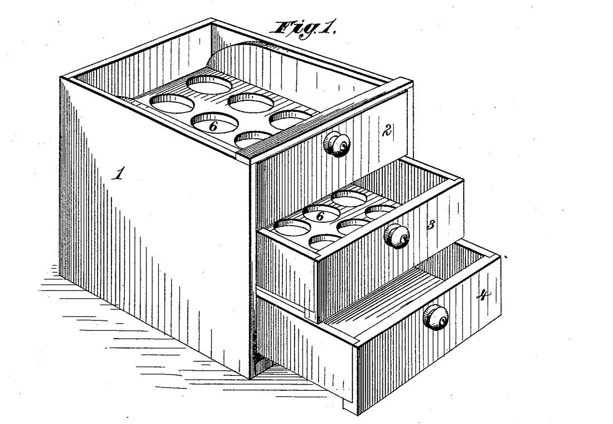

classgraphic package¶
Interactive classification diagnostic plots for scikit-learn.

We classify things for the purpose of doing something to them. Any classification which does not assist manipulation is worse than useless. - Randolph S. Bourne, “Education and Living”, The Century Co (April 1917)
Module contents¶
Top-level package for Classgraphic.
Submodules¶
classgraphic.common¶
common functions for table and viz.
- classgraphic.common.complementary_hex_color(rgb)¶
Return Complementary hexadecimal color of hex or rgb color.
- Parameters:
rgb (str) – color to convert, formatted as either #aabbcc or rgb(111,222,123)
- Returns:
hex color (str)
- classgraphic.common.get_labels(model, y, as_str=True)¶
Get labels from the model.
We use a one hot strategy and ultimately get the resulting column names.
- Parameters:
model – scikit-learn model
y (Series or array) – the target column for classification
as_str (bool) – default to list of string, else return one hot encoded dataframe
- Returns:
(list(str) or dataframe)
- classgraphic.common.heatmap_colorscale(colorscale=None, template=None)¶
Get heatmap colorscale from colorscale or template.
- Parameters:
colorscale (str or list) – plotly named colorscale (blues, burgyl_r…) or 2d list mapping
template (str) – template name to use to get heatmap colorscale from.
- Returns:
list (colorscale)
- classgraphic.common.light_theme(colorscale_list)¶
Evaluate if a theme has a colorscale going from dark to light.
- Parameters:
colorscale_list (list) – list of rgb or hex colors.
- Returns:
bool
- classgraphic.common.missing_matrix(X)¶
Find all missing (None or NaN) values.
For each cell, returns True if value is missing, False if not.
- Parameters:
X (DataFrame or 2d array) – data array to evaluate for missing values.
- Returns:
array of bool
- classgraphic.common.table_template(template=None)¶
Get template to use with a table.
- Parameters:
template (str) – template name. Template has to be valid. If not specified, will use plotly default template.
- Returns:
template (str)
- classgraphic.common.value_count(y_list)¶
Get class counts.
- Parameters:
y_list (DataFrame or array) – usually the target data (y, y_test etc)
- Returns:
counts (dict)
classgraphic.essential¶
By starting a python script or a notebook with from classgraphic.essential import *,
all the basic elements are loaded to start exploring data, build linear classification
models and evaluate them.
Specifically, essential exposes the following tables:
class_imbalance_table
classification_table
confusion_matrix_table
describe
prediction_table
table
And the following charts:
class_imbalance
class_error
det
feature_importance
missing
precision_recall
roc
prediction_histogram
threshold
For templates:
set_default_template
classgraphic.essential also sets the default template to “dion”, which unifies
the look of all visualizations and tables around a gradient of blue, with light background and
lines.
Finally, it also imports numpy as np, pandas as pd, plotly.express as px, plotly.graph_objects as go
and make_classification, train_test_split and LogisticRegression from sklearn.
classgraphic.table¶
Classification tables, in plotly and pandas format.
- classgraphic.table.class_imbalance_table(y, y2=None, condition=None, sort=False, ascending=False, extended=False, colorscale=None, template=None, **kwargs)¶
Class imbalance table.
Given a target Series or array (eg. y, y_test, y_train), this visualize the balance/imbalance of classes.
- Parameters:
y (series or array) – usually, the target column for classification
y2 (series or array) – optional. If provided an additional count column will allow for comparison
condition (str) – added to title. Something like ‘train’, ‘test’, ‘train and test’, ‘real and test’
sort (bool) – if True, data will be sorted by class count
ascending (bool) – if True, sort ascending, else descending
extended (bool) – return a dataframe, besides the Plotly table figure
colorscale (str or list) – plotly named colorscale (blues, burgyl_r…) or 2d list mapping
template (str) – template name to use - uses heatmap colorscale, not table colors to provide alternating colors
**kwargs – any Plotly kwargs for go.Table
- Returns:
Figure (, Dataframe if extended)
- classgraphic.table.classification_table(model, y, y_pred, extended=False, colorscale=None, template=None, **kwargs)¶
Classification report table.
- Parameters:
y (series or array) – usually, the target column for classification
y_pred (series or array) – predicted values
condition (str) – added to title. Something like ‘train’, ‘test’, ‘train and test’, ‘real and test’
sort (bool) – if True, data will be sorted by class count
ascending (bool) – if True, sort ascending, else descending
extended (bool) – return a dataframe, besides the Plotly table figure
colorscale (str or list) – plotly named colorscale (blues, burgyl_r…) or 2d list mapping
template (str) – template name to use - uses heatmap colorscale, not table colors to provide alternating colors
**kwargs – any Plotly kwargs for go.Table
- Returns:
Figure (, Dataframe if extended)
- classgraphic.table.confusion_matrix_table(model, y, y_pred, normalize=None, extended=False, colorscale=None, template=None, **kwargs)¶
Confusion matrix table.
- Parameters:
model – scikit-learn model
y (series or array) – the target column for classification
y_pred (series or array) – predicted values
normalize (str)) – one of None, ‘true’ (or synonym ‘real’), ‘pred’, ‘all’
extended (bool) – return a dataframe, besides the Plotly table figure
colorscale (str or list) – plotly named colorscale (blues, burgyl_r…) or 2d list mapping
template (str) – template name to use - uses heatmap colorscale, not table colors to provide alternating colors
**kwargs – any Plotly kwargs for go.Heatmap
- Returns:
Figure (table)(, Dataframe if extended)
- classgraphic.table.describe(X, colorscale=None, template=None, transpose=False, **kwargs)¶
Dataframe description table.
This is equivalent to pandas df.describe(), with extra quantiles and non numerical feature stats, such as top and frequency.
- Parameters:
X (dataframe or array) – tabular data
colorscale (str or list) – plotly named colorscale (blues, burgyl_r…) or 2d list mapping
template (str) – template name to use - uses heatmap colorscale, not table colors to provide alternating colors
transpose (bool) – columns become rows, rows become columns
**kwargs – any Plotly kwargs for go.Figure
- Returns:
Figure (table)
- classgraphic.table.prediction_table(model, y, y_pred, colorscale=None, template=None, **kwargs)¶
Real vs Prediction table.
- Parameters:
model – scikit-learn model
y (series or array) – the target column for classification
y_pred (series or array) – predicted values
normalize (str)) – one of None, ‘true’ (or synonym ‘real’), ‘pred’, ‘all’
extended (bool) – return a dataframe, besides the Plotly table figure
colorscale (str or list) – plotly named colorscale (blues, burgyl_r…) or 2d list mapping
template (str) – template name to use - uses heatmap colorscale, not table colors to provide alternating colors
**kwargs – any Plotly kwargs for go.Heatmap
- Returns:
Figure (table)
- classgraphic.table.table(df, title=None, format=None, colorscale=None, template=None, named_index=True, **kwargs)¶
Build generic plotly table.
- Parameters:
df (dataframe) – tabular data
title (str) – title for the table. Can use <b></b>, <sub></sub>, <br> etc. Font size is defined by the template.
colorscale (str or list) – plotly named colorscale (blues, burgyl_r…) or 2d list mapping
template (str) – template name to use - uses heatmap colorscale, not table colors to provide alternating colors
**kwargs – any Plotly kwargs for go.Figure
- Returns:
Figure (table)
classgraphic.template¶
template.py.
Various templates in plotly format.
- classgraphic.template.DION_LOGO = layout.Template({ 'layout': {'images': [{'layer': 'below', 'name': 'logo', 'opacity': 0.1, 'sizex': 0.7, 'sizey': 0.7, 'sizing': 'contain', 'source': 'http://dionresearch.com/img/dion_research_logo_small_transparent.png', 'visible': True, 'x': 0.5, 'xanchor': 'center', 'xref': 'paper', 'y': 0.9, 'yanchor': 'top', 'yref': 'paper'}]} })¶
Logo template
- classgraphic.template.DION_TEMPLATE = {'data': {'heatmap': [{'colorbar': {'outlinewidth': 0, 'ticks': ''}, 'colorscale': [[0.0, 'rgb(247,251,255)'], [0.125, 'rgb(222,235,247)'], [0.25, 'rgb(198,219,239)'], [0.375, 'rgb(158,202,225)'], [0.5, 'rgb(107,174,214)'], [0.625, 'rgb(66,146,198)'], [0.75, 'rgb(33,113,181)'], [0.875, 'rgb(8,81,156)'], [1.0, 'rgb(8,48,107)']], 'type': 'heatmap'}], 'heatmapgl': [{'colorbar': {'outlinewidth': 0, 'ticks': ''}, 'colorscale': [[0.0, 'rgb(247,251,255)'], [0.125, 'rgb(222,235,247)'], [0.25, 'rgb(198,219,239)'], [0.375, 'rgb(158,202,225)'], [0.5, 'rgb(107,174,214)'], [0.625, 'rgb(66,146,198)'], [0.75, 'rgb(33,113,181)'], [0.875, 'rgb(8,81,156)'], [1.0, 'rgb(8,48,107)']], 'type': 'heatmapgl'}], 'histogram': [{'marker': {'colorbar': {'outlinewidth': 0, 'ticks': ''}}, 'type': 'histogram'}], 'pie': [{'automargin': True, 'type': 'pie'}], 'table': [{'cells': {'fill': {'color': 'rgb(247,251,255)'}, 'line': {'color': 'black'}}, 'header': {'fill': {'color': 'rgb(158,202,225)'}, 'line': {'color': 'black'}}, 'type': 'table'}]}, 'layout': {'colorscale': {'sequential': [[0.0, 'rgb(247,251,255)'], [0.125, 'rgb(222,235,247)'], [0.25, 'rgb(198,219,239)'], [0.375, 'rgb(158,202,225)'], [0.5, 'rgb(107,174,214)'], [0.625, 'rgb(66,146,198)'], [0.75, 'rgb(33,113,181)'], [0.875, 'rgb(8,81,156)'], [1.0, 'rgb(8,48,107)']]}, 'font': {'color': 'rgb(8,48,107)'}, 'margin': {'b': 40, 't': 140}, 'title': {'x': 0.05}, 'title_font_size': 24}}¶
Dion Research blue gradient template
- classgraphic.template.HIDE_LEGEND = layout.Template({ 'layout': {'showlegend': False} })¶
Hide Legend
- classgraphic.template.seq_colorscale = [[0.0, 'rgb(247,251,255)'], [0.125, 'rgb(222,235,247)'], [0.25, 'rgb(198,219,239)'], [0.375, 'rgb(158,202,225)'], [0.5, 'rgb(107,174,214)'], [0.625, 'rgb(66,146,198)'], [0.75, 'rgb(33,113,181)'], [0.875, 'rgb(8,81,156)'], [1.0, 'rgb(8,48,107)']]¶
sequential colorscale
- classgraphic.template.set_default_template(template='dion')¶
set_default_template.
- Parameters:
template (str) – template to use for all charts. Defaults to DEFAULT_TEMPLATE.
classgraphic.viz¶
Classification visualizations, in plotly format and some also in pandas format.
- classgraphic.viz.class_error(model, y, y_pred, normalize=False, reference=True, **kwargs)¶
Classification error chart.
Given a model, a target Series or array and a prediction Series or array, this visualize the prediction errors (for each real class, a breakdown of how many predicted by class). If normalize is False, it also show balance/imbalance of classes. If normalize is True, the bars all represent 100% of the class, and each segment, the percent of that predicted class for the real class.
- Parameters:
model (sklearn model) – A scikit learn model (displayed in title)
y (series or array) – the target column for classification
y_pred (series or array) – predicted values
normalize (bool) – if True, each segment is in percent and each true class is equal to 100%
reference (bool) – add a reference line to better compare classes
**kwargs – any Plotly kwargs for px.bar
- Returns:
Figure
- classgraphic.viz.class_imbalance(y, y2=None, condition=None, sort=False, ascending=False, reference=True, always_bar=False, barmode='stack', **kwargs)¶
Class imbalance visualization.
Given a target Series or array (eg. y, y_test, y_train), this visualize the balance/imbalance of classes. For binary classification, the default is a pie chart. For multiclass, it is a bar chart.
- Parameters:
y (series or array) – usually, the target column for classification
condition (str) – added to title. Something like ‘train’, ‘test’
sort (bool) – if True, data will be sorted by class count
ascending (bool) – if True, sort ascending, else descending
reference (bool) – add a reference line to better compare classes
always_bar (bool) – it True, for binary classification use bar instead of pie chart
barmode –
**kwargs – any Plotly kwargs for px.pie or px.bar
- Returns:
Figure
- classgraphic.viz.det(model, y, y_pred, **kwargs)¶
Plot detection error tradeoff (DET) curve.
- A visualization of error rates for binary classification, plotting the probit of false negative
rate vs. false positive rate. The interval -3, 3 from the probit is mapped to a percentage.
- Parameters:
model (sklearn model) – A scikit learn model (displayed in title)
y (series or array) – the target column for classification
y_pred (series or array) – predicted values
**kwargs – any Plotly kwargs for px.line
- Returns:
Figure
- classgraphic.viz.feature_importance(model, y, transpose=False, extended=False, **kwargs)¶
Feature Importance.
- Parameters:
model (sklearn model) – A scikit learn model (displayed in title)
y (series or array) – the target column for classification
transpose (bool) – columns become rows, rows become columns
extended (bool) – return a dataframe, besides the Plotly figure
**kwargs – any Plotly kwargs for px.histogram
- Returns:
Figure
- classgraphic.viz.missing(X, warning=True, **kwargs)¶
Missing data heatmap.
Missing is defined here as NaN on numerical data types.
- Parameters:
X (sklearn model) – A scikit learn model (displayed in title)
warning (bool) – Issue a warning if there are some missing values.
**kwargs – any Plotly kwargs for px.imshow
- Returns:
Figure
- classgraphic.viz.precision_recall(model, y, y_probs, **kwargs)¶
Precision / Recall curve.
- Parameters:
model (sklearn model) – A scikit learn model (displayed in title)
y (series or array) – the target column for classification
y_probs (series or array) – predicted value probabilities
**kwargs – any Plotly kwargs for px.line
- Returns:
Figure
- classgraphic.viz.prediction_histogram(model, y, y_probs, nbins=50, barmode='overlay', reference=True, extended=False, **kwargs)¶
Prediction Histogram chart.
- Parameters:
model (sklearn model) – A scikit learn model (displayed in title)
y (series or array) – the target column for classification
y_probs (series or array) – predicted value probabilities
nbins (int) – number of bins, default to 50
barmode (str) – one of [‘stack’, ‘group’, ‘overlay’, ‘relative’, None], defaults to overlay
reference (bool) – add a reference line to better compare classes
extended (bool) – return a dataframe, besides the Plotly figure
**kwargs – any Plotly kwargs for px.histogram
- Returns:
Figure
- classgraphic.viz.roc(model, y, y_probs, ovo=False, ovr=True, **kwargs)¶
Plot Receiver Operating Characteristic (ROC) curve.
- Parameters:
model (sklearn model) – A scikit learn model (displayed in title)
y (series or array) – the target column for classification
y_probs (series or array) – predicted value probabilities
ovo (bool) – if True, display One vs One macro average and weighted AUC (multiclass)
ovr (bool) – if True, display One vs Rest macro average and weighted AUC (multiclass)
**kwargs – any Plotly kwargs for go.Figure
- Returns:
Figure
- classgraphic.viz.threshold(model, y, y_probs, **kwargs)¶
Plot True Positive Rate vs False Positive Rate for all Threshold.
- Parameters:
model (sklearn model) – A scikit learn model (displayed in title)
y (series or array) – the target column for classification
y_probs (series or array) – predicted value probabilities
**kwargs – any Plotly kwargs for go.Figure
- Returns:
Figure
- classgraphic.viz.view(X, y_real, y_pred=None, nobs=10, extended=False, **kwargs)¶
Receiver Operating Characteristic.
- Parameters:
X (DataFrame or serues or array) – feature data to view
y_real (series or array) – the target column for classification matching X
y_pred (series or array) – optional, predicted value probabilities matching X
nobs (int) – number of observations to display
extended (bool) – if True, return dataframe
**kwargs – any Plotly kwargs for px.scatter
- Returns:
Figure